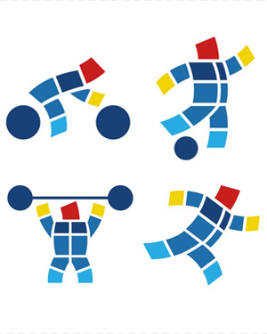
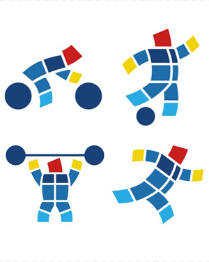
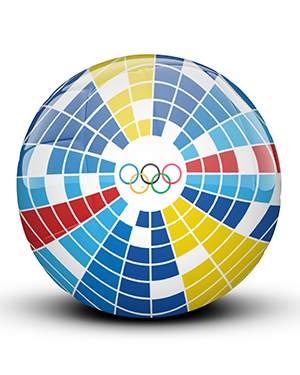
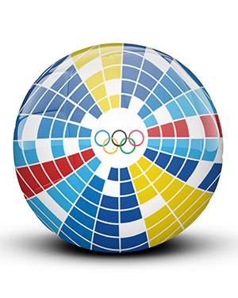

 

Identidad visual
Juegos Olímpicos Nápoles
Para esta propuesta conceptual de identidad, los Juegos Olímpicos encuentran su hogar en Nápoles, una ciudad rica en textura, historia y carácter. El eje del proyecto se centró en los azulejos tradicionales que decoran las fachadas y hogares napolitanos, tomados como símbolo de identidad cultural, memoria colectiva y ornamentación cotidiana.
La gráfica se construye a partir de la reinterpretación de estos patrones cerámicos, integrando colores, formas y modulaciones que evocan tanto lo artesanal como lo contemporáneo. Cada pieza del sistema —desde el logotipo hasta las aplicaciones editoriales y señaléticas— fue diseñada para capturar la energía vibrante de Nápoles y su espíritu mediterráneo, sin perder la fuerza institucional de un evento global como los Juegos Olímpicos.
El resultado es una identidad que celebra la cultura local como protagonista visual, y transforma la tradición en una narrativa gráfica potente y coherente.